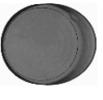

Package geometry
Edges, seams, closures, overlaps, and container shape can create patterns that must be understood, not treated as undifferentiated noise.
BEVERAGE & PACKAGED GOODS
GreyscaleAI helps beverage and packaged-goods teams detect supported foreign material risks, classify package-quality conditions such as dents, and review image-backed events across SKUs, lines, and plants.


PRODUCTION CHALLENGES
Cans, bottles, pouches, cartons, trays, and multi-component packs create different image backgrounds, handling conditions, and inspection questions. The application must separate normal product and package variation from events that need attention.
Edges, seams, closures, overlaps, and container shape can create patterns that must be understood, not treated as undifferentiated noise.
Products and packages can change by flavor, fill, size, material, and supplier, so one fixed template rarely tells the whole story.
Foreign material events and package-quality conditions should be classified separately so teams know what they are responding to.
QA and operations need image-backed evidence and common reason codes to compare recurring issues across lines and facilities.
RELEVANT APPLICATIONS
Beverage and packaged-goods teams may be solving several different problems on the same line. Start with the condition that matters, then validate the product, package, target, and line conditions.
Classify package-quality conditions such as dents, product in the seal area, open seals, code checks, and product defects when the image source and application support them.
Explore the applicationReview supported risks such as metal, glass, stone, calcified bone, and other dense material with the actual product and package in the validation loop.
Explore the applicationSearch image-backed inspection events by product, line, lot, shift, and time window to support investigation and disposition workflows.
Explore the applicationTrack recurring reject and quality signals by SKU, line, shift, or facility so patterns are easier to separate from one-off events.
Explore the applicationINSIGHTS SOFTWARE
A dent, seal issue, code problem, or foreign material event is more useful when the image, AI classification, machine context, and production context stay connected. GreyscaleAI Insights gives authorized teams a shared place to review events and see whether a condition is isolated or recurring.
Review the inspection image and AI classification, not only a reject total.
Keep package-quality signals such as dents distinct from foreign material events.
Filter by product, line, shift, lot, facility, time window, and reason code when those fields are available.
Give FSQA, operations, and corporate teams a common, image-backed record for follow-up.
APPLICATION FIT
Cans, bottles, pouches, cartons, trays, and multi-component packs create different inspection backgrounds and handling requirements. System selection and model performance must be validated with the actual product, package, target condition, line speed, and production environment.
RELATED PROOF
In a canned-tuna application, GreyscaleAI used production imagery to classify sidewall deformation separately from foreign material events. Quality teams could monitor dent activity as its own signal in Insights instead of losing it inside a generic reject category.


NEXT STEP
GreyscaleAI can help determine the right image source, inspection system, validation approach, and Insights workflow for the application.